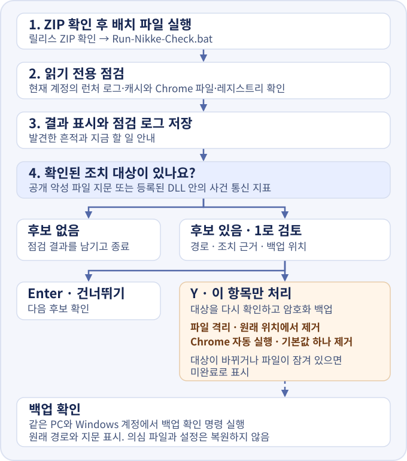

실행 방법
- ZIP을 풀고
Run-Nikke-Check.bat와Check-Nikke.ps1을 같은 폴더에 둡니다. - 니케를 사용한 Windows 계정에서 배치 파일을 두 번 클릭합니다. 설치 위치를 안다면 설치 폴더를 배치 파일 위로 끌어 놓을 수도 있습니다.
- 화면에서 결과와 지금 할 일을 봅니다. 자세한 기록은
logs폴더에 있습니다.
화면과 로그는 Windows 표시 언어를 따릅니다. 한국어·영어·일본어를 지원하며, 그 외에는 영어로 나옵니다. 한국어를 직접 고르려면 탐색기에서 도구 폴더를 열고 주소창에 powershell을 입력한 뒤 아래 명령을 실행하세요.
.\Run-Nikke-Check.bat -Language ko기본 점검에서는 기록을 읽고 로그를 저장합니다. 감염을 뒷받침할 근거가 있으면 파일 격리나 Chrome 자동 실행 해제를 선택할 수 있습니다. 화면에 표시된 대상 경로, 백업 위치와 복구 명령을 확인하세요. 처리할 항목에만 Y를 입력하고, 건너뛸 때는 Enter를 누르세요.
오탐으로 확인되면 같은 PC의 같은 Windows 계정에서 도구 폴더를 열고 주소창에 powershell을 입력하세요. 화면에 나온 복구 명령을 붙여 넣고, 경로가 맞으면 RESTORE를 입력하세요. 원래 위치에 파일이나 레지스트리 값이 있으면 복구가 중단됩니다.
결과가 나오면
- 실행 또는 Chrome 자동 실행 흔적
- 인터넷을 끊고 런처를 닫으세요. 다른 안전한 기기에서 비밀번호를 바꾸고 모든 기기에서 로그아웃하세요. 개인 PC라면 보호 기록을 보관한 뒤 백신이 격리한 위협을 제거하고 Windows 클린 설치를 검토하세요.
- 다운로드 흔적
- 인터넷을 끊고 런처를 닫으세요. 점검 로그를 보관한 뒤 백신으로 검사하고, 런처를 제거한 다음 다시 점검하세요. 실행을 배제하기 어렵다면 다른 기기에서 계정을 보호하세요.
- 노출 또는 다운로드 주소
- 런처를 닫고 점검 로그를 보관하세요. 개인 PC의 Windows 설정에서 니케를 제거하세요. 결과에 표시된 런처 캐시가 남아 있다면 그 폴더를 지우고, 수정판 안내를 확인한 뒤 공식 배포처에서 다시 설치하세요.
- 판정 보류
- 니케를 사용한 Windows 계정에서 설치 폴더를 지정해 다시 확인하세요.
- 흔적 미발견
- 읽은 자료에서 알려진 흔적을 찾지 못했습니다. 지워졌거나 읽지 못한 기록은 확인 범위에서 빠집니다.
회사 PC는 정리 전에 보안 담당자에게 연락하세요. 개인 PC에서 격리 파일을 제거할 때는 점검 로그에 나온 경로와 백신의 보호 기록을 대조하세요. Windows 앱 제거 · Windows 보안 보호 기록